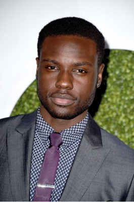
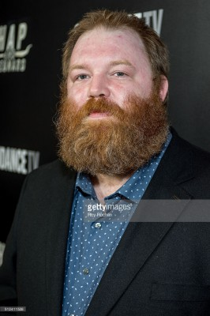
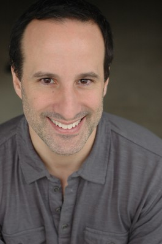
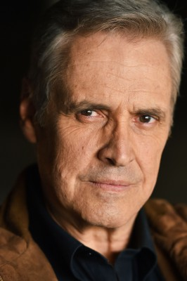

#8473 Endless Love

 IMDB-Wertung: 6.3 / 10
IMDB-Wertung: 6.3 / 10  Tomatometer: 16
Tomatometer: 16  Metascore: 0
Metascore: 0 
Jade ist in guten Verhältnissen aufgewachsen. Im Sommerurlaub mit ihren Eltern lernt sie den charismatischen David kennen – aus anfänglicher Zuneigung entsteht schnell grenzenlose Leidenschaft. Doch als Jades Vater Hugh Butterfield mitbekommt, dass sich seine Tochter mit David rumtreibt, sieht er seine Zukunftsplanung für Jade gefährdet. Denn eigentlich sollte seine Tochter Medizin studieren und ihm irgendwann einmal als Ärztin nachfolgen. Dazu sollte die junge Frau im Sommer ein Praktikum machen und nicht die Zeit mit einem perspektivlosen Jungen totschlagen. Um David loszuwerden, beschuldigt Butterfield ihn, eine dunkle Vergangenheit zu haben und diese vor Jade zu verheimlichen. Getrieben von bedingungsloser Liebe muss sich David seiner Vergangenheit stellen, ohne seine Freundin zu verschrecken…
Jahr: 2014
Dauer: 104 Minuten
FSK: 6
Land: USA Studio: Universal PicturesTonspuren: DTS - ,
Untertitel: Deutsch,
Auflösung: 1080p (1920x816) Größe: 8581 MB
Genre: Drama, Liebe
Regisseur: Shana Feste
Drehbuch: Shana Feste
Soundtrack: Christophe Beck
Darsteller:
 Alex Pettyfer als David Elliot
Alex Pettyfer als David Elliot- Gabriella Wilde als Jade Butterfield
 Bruce Greenwood als Hugh Butterfield
Bruce Greenwood als Hugh Butterfield Joely Richardson als Anne Butterfield
Joely Richardson als Anne Butterfield Robert Patrick als Harry Elliot
Robert Patrick als Harry Elliot Rhys Wakefield als Keith Butterfield
Rhys Wakefield als Keith Butterfield-  Dayo Okeniyi als Mace
- Emma Rigby als Jenny
- Anna Enger als Sabine
- Fabianne Therese als Checka
-  Jeff Pope als Mechanic
- Zechariah Pierce als Waiter
-  Dan Triandiflou als Manager
-  Andrew Masset als Joe
- Patrick Johnson als Chris Butterfield
- Alexa Rachelle als High School Girl
- Marie Burke als Gwen
- Tallie L. Brinson als Dancing Party Boy
 Jimmy Gonzales als Cop
Jimmy Gonzales als Cop- Michelle Brzenk als Hospital Receptionist
 Sharon Conley als Dr. Nesbitt
Sharon Conley als Dr. Nesbitt- Matthew Withers als Miles
- Alexandra Bartee als Kelly
 Nelson Bonilla als TSA Agent
Nelson Bonilla als TSA Agent- Chance Bartels als EMT (uncredited)
- Candace Blanchard als Young David's Mom (uncredited)
 Becky Boyd als Graduation Parent (uncredited)
Becky Boyd als Graduation Parent (uncredited)- Wadette Bradford als Airport Traveler Wife (uncredited)
- Alexandra Ficken als Hope (uncredited)
 Fred Galle als Parent (uncredited)
Fred Galle als Parent (uncredited) Jeff Glover als Principal Moss (uncredited)
Jeff Glover als Principal Moss (uncredited)- Chas Harvey als Vista Boy (uncredited)
- Kristi Lauren als Woman on Trampoline (uncredited)
- Anissa Matlock als Pool Jumper (uncredited)
- Garrick Parks als Flight Attendant (uncredited)
- Jessica Pressley als Fountain Kid (uncredited)
- Manuel Rodriguez als Barbecue Party Guest (uncredited)
- Paisley Scott als Child in Airport (uncredited)
- Gabriela Spencer als Cafe Waitress (uncredited)
- Laura Stetman als Graduate (uncredited)
- Dawn Young-McDaniel als Bartender (uncredited)
- Mike Bland als Harry's Friend
- Jake Schultz als Harry's Friend
- Ryan Lewis als Maserati Driver
- Stephanie Northrup als Dawn
- Jonathan Velazquez als Party Boy
- Danielle Rodas als Dancing Party Girl
- William Henry Milne als Boy in Pool
- Sonia Rose als Girl in Pool
- Joey Nappo als Charlie
Datei: X:\2014(A-F)\Endless Love (2014, FSK6, 1920x816).mkv seit 07.03.2018
Festplatte: HD 2013(I-Z)-2014(A-Z)
 Es gibt insgesamt 119 Filme in der Gruppe '2014(A-F)'
Es gibt insgesamt 119 Filme in der Gruppe '2014(A-F)'